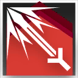
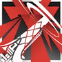

要塞 Fortress
“炮弹迅疾如风暴，盾牌坚硬似铁壁。”
――号角合同
要塞（Fortress）是重装职业中其中一个职业分支。要塞结合了坚固的防御和重武器支援，使用重炮等武器在远距离打击敌人，同时用盾牌保护自己。他们的火力覆盖能为队伍创造优势，并压制敌方推进。
在战斗中，要塞部署在战略位置，利用重武器压制敌人。他们擅长区域控制和持续输出，并通过后勤储备维持弹药。职责是提供火力支援，并协助队伍突破敌方防线，确保战场主动权。
要塞特性表
| 重装等级 | 特性 |
| 3rd | 重炮盾兵、战斗风格 |
| 7th | 阵地攻坚 |
| 10th | 专注轰击 |
| 15th | 钢铁防线 |
| 18th | 全弹发射 |
3级：重炮盾兵 Artillery Defender
作为一名要塞，你获得以下特性：
盾牌精通。你习得盾牌的武器精通。（单手持用盾牌时其精通属性为削弱，双手时则是失衡）
炮术精通。你获得单兵突击炮的熟练和精通。你还获得以下增益：
如果你一手持用盾牌，你可以单手持用一把单兵突击炮。
你使用单兵突击炮发动攻击时，可以使用力量而非敏捷作为攻击属性（单兵突击炮作为重型远程武器，仍需要至少敏捷属性13才能操作）。
此外，你立即获得一把只有你能使用的单兵突击炮。
后勤储备。你可以半价购买发射器章节提到的武器和弹药。如果你有等同发射器弹药价值一半的原材料，你也可以在完成一次长休后自己组装1份出来。
此外，你习得战技：强力击、迅捷打击 或 攻击力强化 其中之一。你可以在每次升级重新选择以此习得的战技。
|
|
强力击丨Power Strike攻击命中 消耗 1 技力
|
 立即
立即你可以在攻击命中的同时消耗1点技力来发动此战技。你立刻让这次命中的攻击，额外造成等同你熟练加值枚d6的伤害。

|
迅捷打击丨Swift Strike附赠动作 消耗 1 技力
|
你可以附赠动作并消耗1点技力来发动此战技。直到本回合结束前：你执行攻击动作时，可以额外发动一次武器攻击。
|
 |
攻击力强化丨Atk Up附赠动作 消耗 1 技力
|
你可以附赠动作并消耗1点技力来发动此战技。直到本回合结束前：你的攻击检定获得+1d4加值，伤害掷骰获得等同熟练加值的加值。
3级：战斗风格 Extra Fighting Style
你选择专注于一种特定的炮术风格。你习得一项你选择的战斗风格专长（见专长章节）。你之后可以在每次升级时替换所选的战斗风格。
7级：阵地攻坚 Positional Tactics
你精确控制榴弹炮的爆炸来让自己在阵地战中更具优势。
你使用发射器弹药发动的攻击总是具有可控属性。
此外，你将你的单兵突击炮作为临时武器而进行近战攻击时，你具有其熟练项，这次攻击造成2d8点钝击伤害而非一般的临时武器伤害，并且在命中时，你可以选择在其身上发射并引爆一枚弹容中的榴弹弹药（此爆炸只会影响主目标）。
10级：专注轰击 Focus Bombardment
你精准的火力投射，允许你的发射器武器攻击的伤害掷骰中加入你的攻击属性调整值。
此外，你习得战技：专注轰击。
|
 |
专注轰击 | Focus Bombardment附赠动作 消耗 1 技力
|
你可以附赠动作并消耗1点技力来发动这个战技。直到本回合结束前：你使用发射器武器发动的远程攻击造成的伤害提升至你熟练加值枚d8，而非原本的弹药伤害。此外，你的弹药伤害可以加入你的熟练加值。
15级：钢铁防线 Steel Meridian
你充沛的火力组成了牢不可破的钢铁防线，掩护你的盟友。你习得下述特性：
火力支援。当你的一名可见盟友被攻击命中时，你可以立即采取反应，对其用单兵突击炮发动远程武器攻击。
要塞防御。你未失能时，为周围5尺的其他盟友提供半身掩护。
18级：全弹发射 Full Launch
你懂得激发潜力，用澎湃的火力压制敌人。你消耗技力发动战技的回合，以一个魔法动作，你可以发动至多等同你熟练加值次的远程武器攻击。每以此发动一次攻击，你就流失2d12点生命值。
此特性一经使用，直到你完成一次长休前不可再次使用。